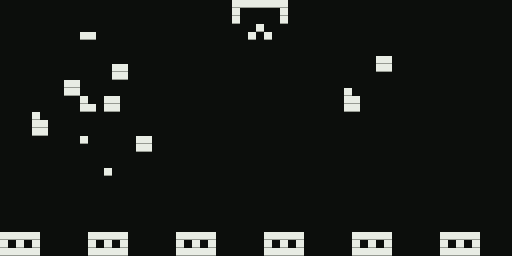
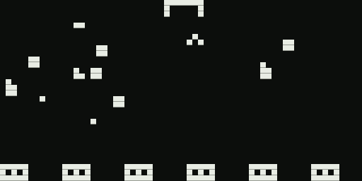

Rescue Mission
Author not credited · DREAMER no. 8 (1981-04) p. 20 1K RAMjoystick



Fly a rescue module from the mother ship down to cells on a planet and back, using the analog joystick. Horizontal stick position sets direction and the vertical position controls descent speed; fuel is spent only with the stick at an extreme. Asteroids drift through the scene.
Keys
Bauer's joystick steers the lander; F releases the module from the mother ship and launches it after landing.
Files
| File | Version | Load | Run |
|---|---|---|---|
| Rescue Mission.d68 | main | 0080-03FF | C000 |
Listing as transcribed (with notes): rescue_mission.txt
Source
DREAMER no. 8 on archive.org, p. 20 (PDF page 22). Author: not credited in the newsletter.
Corrections applied
- 00F0 A2C8 -> A2CB (the dot-matrix print looks like 8; with C8 every take-off crashed because the cell sprite XORed away by the landing scan is F8 A8 F8 at 02CB).
Open doubts
- Later layers and the bonus ship were not tested.